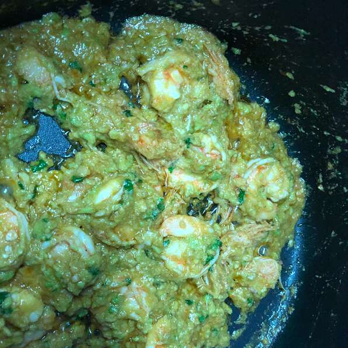

Avocado Prawns

Description
Juicy prawns/shrimp in a creamy mayonnaise sauce served in a ripe avocado is the perfect elegant appetizer. These stuffed avocados are a guaranteed crowd pleaser.
Ingredients
- 2 avocados, halved with pits removed
- ½ lemon, zested
- ½ lemon, zested and juiced
- ½ teaspoon white sugar
- 1 tablespoon chopped Italian flat leaf parsley
- 1 ½ tablespoons olive oil
- ½ teaspoon chopped garlic
- ½ pound peeled and deveined prawns
- 1 teaspoon salt
- 1 pinch ground black pepper, to taste
Steps
- Mash the avocados, lemon zest, lemon juice, sugar, and parsley together in a bowl. Set aside.
- Heat the olive oil in a skillet over medium-low heat; cook the garlic in the hot oil until slightly browned, about 5 minutes. Add the prawns and increase heat to medium. Season with salt and pepper. Cook and stir the prawns over medium heat until they begin to change color. Reduce heat to low. Stir the avocado mixture into the prawns; cook until the avocado is completely heated, about 2 minutes. Garnish with a little bit of black pepper to serve.
Return Home